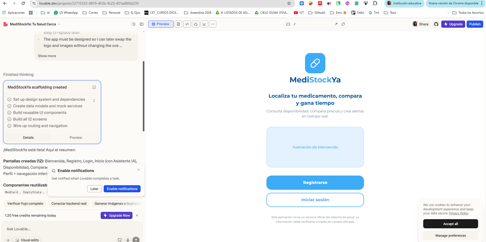
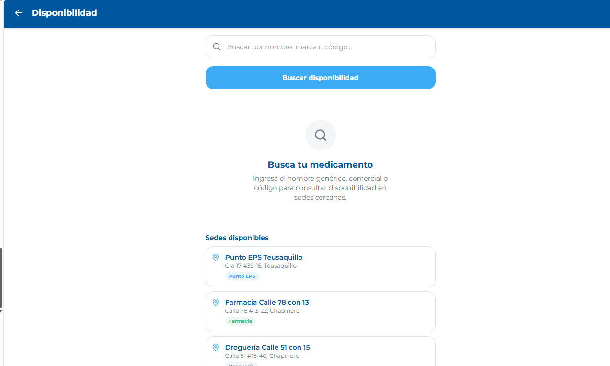
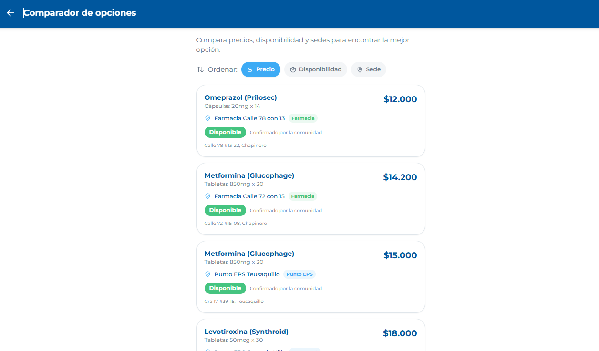
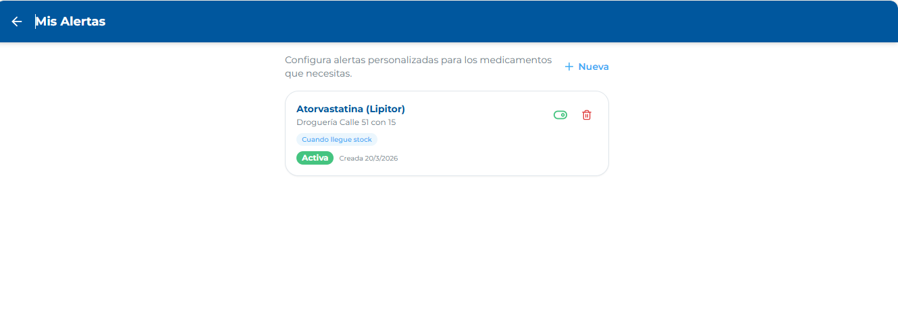
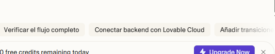
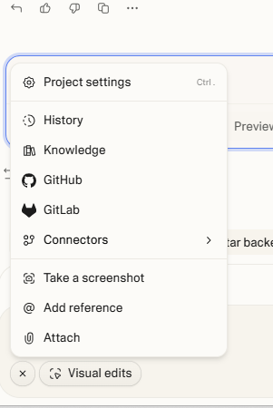
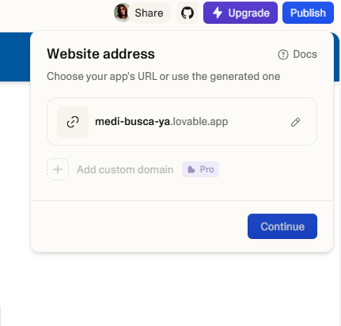
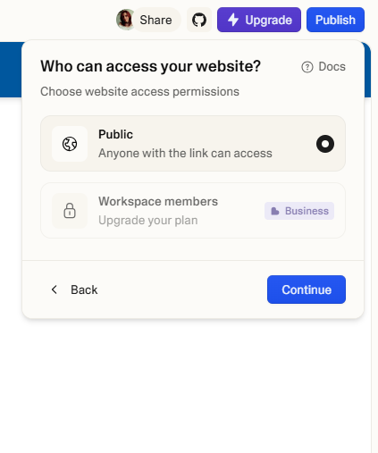
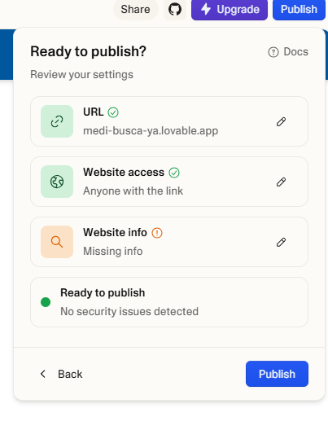

Guía breve para documentar la construcción de la app MediStockYa
Recorre el proceso desde la preparación previa hasta la publicación final. Cada tarjeta muestra solo el título; al pulsarla,
se abre una ventana con la explicación y la captura correspondiente.
Antes de entrar a Lovable conviene reunir lo básico: pantallas de referencia, nombres de módulos, colores, textos y una idea clara del flujo. Eso evita gastar créditos improvisando.
Lista de pantallas y funciones.
Maquetación base ya pensada.
Textos clave y estilo visual.
Inicio del proyecto en Lovable.
Diseño en Adalo
Si la app ya existe o ya fue pensada en Adalo, esa base se usa como referencia funcional y visual. Sirve para trasladar navegación, estructura de pantallas, estilo y jerarquía al nuevo proyecto en Lovable.
Tomar Adalo como guía, no empezar desde cero.
Conservar nombre de módulos y lógica de uso.
Extraer capturas de lo más importante para el prompt.
Capturas e imágenes
El material visual se adjunta desde el botón + y la opción Attach. Lo ideal es subir de 4 a 6 capturas claras: inicio, disponibilidad, comparador, reporte y perfil.
Ruta para adjuntar capturas e imágenes.
Registro
Antes del primer prompt se crea la cuenta o se ingresa al workspace de Lovable. Una vez dentro, el cuadro central permite iniciar el proyecto y el botón + sirve para adjuntar el material previo.
Workspace listo para comenzar.
Prompt maestro
El primer prompt debe explicar la app completa: nombre, módulos, estructura, estilo, flujo y preparación para base de datos. En este caso se pidió MediStockYa desde cero, respetando la maquetación y con un bloque básico de asistente IA.

Primera versión generada desde el prompt inicial.
Imágenes para subir
Las imágenes se usan para mostrar la estructura visual deseada. Se suben en el mismo cuadro del prompt, con Attach, y deben señalarse como referencia principal de maquetación.
Subir capturas limpias y representativas.
Incluir home, disponibilidad, comparador y perfil.
Evitar saturar el primer envío con demasiados archivos.
Adjuntar imágenes en el prompt.
Idioma y características
En el prompt conviene fijar desde el inicio el idioma español, el enfoque mobile-first, la tipografía, colores y funciones principales: disponibilidad, comparador, reporte, alertas, perfil y asistente IA.
Idioma: español.
Diseño: enfocado en móvil.
Datos: usuarios, medicamentos, sedes, alertas y reportes.
Correcciones con pocos créditos
En plan gratuito conviene usar un prompt maestro, revisar el flujo y luego hacer una sola ronda de corrección funcional. Para cambios finos se aprovecha Visual edits, que no suele consumir créditos.
Primero estructura.
Después corrección funcional.
Luego pulido visual.
Registro
En la verificación se revisa que el registro y el inicio de sesión tengan sentido dentro del flujo: que permitan entrar a la app, personalizar el saludo y mantener los datos del usuario listos para guardar.
Inicio y bienvenida
La pantalla inicial debe mostrar el saludo correcto, accesos visibles y un bloque del asistente que se entienda. También se valida que la experiencia sea clara desde el primer vistazo.
Home con accesos principales y asistente IA.
Secciones principales
Disponibilidad, comparador y reporte se revisan de manera integrada. Lo importante es que la búsqueda tenga sedes visibles, el comparador diferencie precio y sede, y el reporte reciba bien la fórmula o la novedad.

Disponibilidad con sedes listadas.

Comparador con orden por precio, disponibilidad y sede.Reporte con carga de fórmula médica.
Alertas y perfil
Estas dos secciones van juntas porque ambas dependen del usuario. Se comprueba que las alertas sean personalizadas por medicamento o sede y que el perfil tenga foto, datos visibles y acceso rápido a la configuración.

Alertas configurables.Perfil con foto y datos del usuario.
Asistente IA
El asistente debe presentarse con nombre propio, explicar para qué sirve y ayudar a ubicar medicamentos, comparar opciones, crear alertas y apoyar el reporte cuando hay fórmula médica.
MediBot integrado en la pantalla de inicio.
Revisar o corregir según lo visto
Después de probar el flujo, la corrección se centra en lo realmente observado: sedes que faltan o sobran, textos genéricos, formularios con pocos campos, alertas poco personalizadas o vistas que todavía se sienten demasiado web.

Panel inferior para continuar la iteración cuando haya créditos.
Panel Ask Lovable
Desde el cuadro inferior se mandan nuevas instrucciones. Ese panel sirve para pedir correcciones funcionales o nuevas rondas de construcción, siempre que haya créditos disponibles.
Área principal donde se conversa con Lovable.
Visual edits
Esta opción sirve para cambios más finos de apariencia: mover, ajustar o reemplazar elementos visuales sin rehacer todo el proyecto. Es útil cuando ya no conviene gastar créditos en cambios pequeños.
Visual edits aparece junto al cuadro inferior.
Menú de tres puntos
Desde este menú se abren opciones como Project settings, History, Knowledge, GitHub y Attach. Es el acceso rápido a la configuración del proyecto.

Menú de opciones del proyecto.
Botones útiles con 0 créditos
Aunque el contador llegue a cero, todavía se pueden abrir preview, publicar, revisar el historial, entrar a settings y usar Visual edits. Lo que queda bloqueado es enviar nuevos prompts.
Con 0 créditos aún quedan acciones de revisión y publicación.
Knowledge y GitHub
Knowledge permite dejar instrucciones permanentes del proyecto y GitHub sirve para conectar o sacar el código fuera de Lovable. Son dos rutas útiles para seguir el trabajo sin perder el contexto.
Knowledge y GitHub disponibles desde el menú.
URL del sitio
El primer paso al publicar es elegir o aceptar la URL generada por Lovable. En el plan gratuito se usa el subdominio de lovable.app.

Definición de la dirección web del proyecto.
Tipo de acceso
Después se define quién podrá abrir la web app. En plan gratuito lo habitual es Public, es decir, cualquier persona con el enlace.

Configuración del acceso público.
Website info
Aquí se cambia el título, la descripción y, si ya existe, la imagen social. Aunque no esté todo completo, la publicación puede continuar.
Información básica del sitio antes de publicar.
Publicar
En la pantalla de resumen se valida URL, acceso y metadatos. Si todo está correcto, se pulsa Publish para generar la versión pública.

Resumen final antes de publicar.
Resultado
Al finalizar, Lovable muestra el enlace en vivo de la app. Esa URL se puede abrir, compartir y volver a actualizar cada vez que se publique una nueva versión.